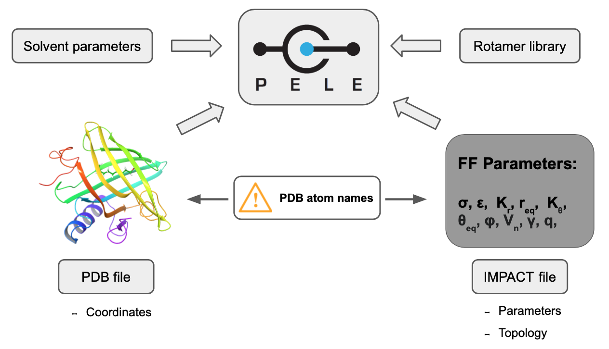

Generate PELE parameter files¶
The main purpose of offpele is to build the parameter files for PELE. Basically, PELE requires two files for each non-standard residue found in the system:
IMPACT template: a file containing the atom types and parameters of the ligand. Its job is to link each atom with the corresponding parameters using PDB atom names. Thus, PDB atom names in the input PDB file must match with the expected PDB atom names in the Impact file. This file intrinsically contains the information about the topology and connectivity of each residue.
Rotamer library: a file containing the branches that can rotate with respect to a central atomic core. Each branch consists in a set of consecutive rotatable bonds.
Besides, a third file with the Solvent parameters might be required when employing the OBC implicit solvent.
{kind=link}
The Open Force Field Toolkit is employed to assign the parameters to each atom according to its chemical environment. Besides, the PDB atom names are stored using RDKit. With this dual molecular representation, offpele can run the parameterization workflow of Open Force Field while tracking the PDB atom names with RDKit.

Basic usage¶
The more straightforward way to install offpele along with the required dependencies is through the command-line interface built in main.py module. Therefore, the parameter files for a particular ligand can be obtained with:
$ python -m offpele.main my_ligand.pdb
------------------------------------------------------------
Open Force Field parameterizer for PELE v0.3.0
------------------------------------------------------------
- General:
- Input PDB: my_ligand.pdb
- Output path: None
- Write solvent parameters: False
- DataLocal-like output: False
- Parameterization:
- Force field: openff_unconstrained-1.2.0.offxml
- Charges method: am1bcc
- Use OPLS nonbonding parameters: False
- Use OPLS bonds and angles: False
- Rotamer library:
- Resolution: 30
- Exclude terminal rotamers: True
------------------------------------------------------------
- Loading molecule from RDKit
- Generating rotamer library
- Loading forcefield
- Computing partial charges with am1bcc
- All files were generated successfully
------------------------------------------------------------
Command-line arguments¶
Almost all the important settings can be tuned up through command-line arguments. To obtain the full list of flags you can type:
$ python -m offpele.main --help
usage: main.py [-h] [-f NAME] [-r INT] [-o PATH] [--with_solvent]
[--as_DataLocal] [-c NAME] [--include_terminal_rotamers]
[--use_OPLS_nonbonding_params] [--use_OPLS_bonds_and_angles]
PDB FILE
positional arguments:
PDB FILE Path PDB file to parameterize
optional arguments:
-h, --help show this help message and exit
-f NAME, --forcefield NAME
OpenForceField\'s forcefield name. Default is
openff_unconstrained-1.2.0.offxml
-r INT, --resolution INT
Rotamer library resolution in degrees. Default is 30
-o PATH, --output PATH
Output path. Default is the current working directory
--with_solvent Generate solvent parameters for OBC
--as_DataLocal Output will be saved following PELE's DataLocal
hierarchy
-c NAME, --charges_method NAME
The name of the method to use to compute charges
--include_terminal_rotamers
Not exclude terminal rotamers when building the
rotamer library
--use_OPLS_nonbonding_params
Use OPLS to set the nonbonding parameters
--use_OPLS_bonds_and_angles
Use OPLS to set the parameters for bonds and angles
Find below the complete list of command-line arguments in full detail.
PDB file¶
It is a mandatory positional argument that points to the PDB file which contains ligand to parameterize.
Flag: PDB FILE
Type: string
Example: the code below will run offpele to parameterize the ligand at path/to/my_ligand.pdb
$ python -m offpele.main path/to/my_ligand.pdb
Force field¶
It defines the Open Force Field force field to employ to parameterize the ligand.
Flag: -f NAME, –forcefield NAME
Type: string
Default: ‘openff_unconstrained-1.2.0.offxml’
Example: the code below will run offpele using the forcefield named as ‘openff_unconstrained-1.0.0.offxml’
$ python -m offpele.main path/to/my_ligand.pdb -f openff_unconstrained-1.0.0.offxml
Rotamer library resolution¶
It defines the resolution, in degrees, to use in the rotamer library.
Flag: -r INT, –resolution INT
Type: int
Default: 30
Example: the code below will run offpele using a resolution of 60 for the rotamer library
$ python -m offpele.main path/to/my_ligand.pdb -r 60
Output path¶
It defines the output path where the resulting files will be saved.
Flag: -o PATH, –output PATH
Type: string
Default: ‘.’, the current working directory
Example: the code below will save the results into my_custom_folder/
$ python -m offpele.main path/to/my_ligand.pdb -o my_custom_folder
Include solvent parameters¶
It also generates the OBC solvent parameters and saves them into the output location.
Flag: –with_solvent
Default: False, not include
Example: the code below will generate and save the OBC solvent parameters
$ python -m offpele.main path/to/my_ligand.pdb --with_solvent
Save output as DataLocal¶
It saves the output files following the DataLocal hierarchy expected by PELE.
Flag: –as_DataLocal
Default: False, not save output files as DataLocal
Example: the code below will generate and save output files following the DataLocal hierarcy of PELE
$ python -m offpele.main path/to/my_ligand.pdb --as_DataLocal
Charges method¶
It sets the method to compute the partial charges.
Flag: -c NAME, –charges_method NAME
Type: string
Choices: one of [‘gasteiger’, ‘am1bcc’, ‘OPLS’]
Default: ‘am1bcc’
Example: the code below will calculate partial charges using ‘gasteiger’ method
$ python -m offpele.main path/to/my_ligand.pdb -c gasteiger
Include terminal rotamers¶
It always includes terminal rotamers, even if they belong to a terminal methyl group whose rotation is trivial in PELE.
Flag: –include_terminal_rotamers
Default: False, exclude terminal rotamers
Example: the code below will generate a rotamer library including all terminal rotamers
$ python -m offpele.main path/to/my_ligand.pdb --include_terminal_rotamers
Parameterize non-bonding terms with OPLS2005¶
Warning
This option requires a valid Schrodinger installation with the ffld_server. An environment variable called SCHRODINGER must be set, pointing to the Schrodinger’s installation path.
It uses OPLS2005 to parameterize the non-bonding terms of the ligand. It also assigns the atom types according to this force field.
Flag: –use_OPLS_nonbonding_param
Default: False, exclude terminal rotamers
Example: the code below will parameterize the non-bonding terms with OPLS2005
$ python -m offpele.main path/to/my_ligand.pdb --use_OPLS_nonbonding_param
Parameterize bonding and angular terms with OPLS2005¶
Warning
This option requires a valid Schrodinger installation with the ffld_server. An environment variable called SCHRODINGER must be set, pointing to the Schrodinger’s installation path.
It uses OPLS2005 to parameterize the bonds and angle terms of the ligand.
Flag: –use_OPLS_bonds_and_angles
Default: False, exclude terminal rotamers
Example: the code below will parameterize the non-bonding, bonding and angular terms with OPLS2005
$ python -m offpele.main path/to/my_ligand.pdb --use_OPLS_nonbonding_param --use_OPLS_bonds_and_angles